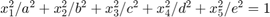

WME_ellipsoid
Generate random points from ellipsoids of various dimension
Contents
Syntax
- X = WME_ellipsoid(N, dim)
- [X, nomVec] = WME_ellipsoid(N, dim)
- [X, nomVec, meanCurv] = WME_ellipsoid(N, dim)
- [X, ...] = WME_ellipsoid(..., name,value)
Description
- X = WME_ellipsoid(N, dim) produces an N*(dim+1) matrix X whose row vectors are points on a dim-dimensional unit sphere embedded in a (dim+1) dimensional Euclidean space
- [X, nomVec] = WME_ellipsoid(N, dim) produces points X together with normal vectors nomVec
- [X, nomVec, meanCurv] = WME_ellipsoid(N, dim) produces points X, normal vectors nomVec, and mean curvature meanCurv (for 2-dimensional surfaces it corresponds to absolute mean curvature)
- [X, ...] = WME_ellipsoid(..., name,value) produces points from general ellipsoids with parameters specified by name-value. The standard equation for a general ellipsoid is . The input format for name-value should be like: 'a', 3, 'b', 2 and so on.
Example
X = WME_ellipsoid(10, 1) % points on a unit circle
X =
0.1371 0.9906
-1.0000 0.0059
-0.9447 -0.3280
-0.7024 0.7118
-0.6898 0.7240
-0.8998 -0.4363
-0.6583 0.7527
-0.8675 -0.4975
0.9909 -0.1348
-0.1788 -0.9839
[X, nomVec, meanCurv] = WME_ellipsoid(10, 3, 'a', 5, 'b', 4, 'c', 3, 'e', 2)
X =
4.4932 -1.1910 0.8033 0.1792
4.4118 -0.3738 1.3774 -0.0436
1.5345 -3.3028 -1.3136 -0.1798
-1.3596 0.4208 -0.2444 0.9531
4.8307 0.4272 -0.7027 -0.0174
2.0439 -2.0337 0.5957 -0.7314
-4.8885 -0.6815 -0.1887 0.1054
-0.1380 3.7959 -0.6746 -0.2193
1.9252 1.1338 -1.3957 -0.7450
-1.0613 0.2409 -2.4241 -0.5463
nomVec =
0.6438 -0.2667 0.3197 0.6420
0.7391 -0.0979 0.6410 -0.1826
0.1941 -0.6528 -0.4616 -0.5685
-0.0569 0.0275 -0.0284 0.9976
0.9165 0.1266 -0.3703 -0.0827
0.1090 -0.1695 0.0883 -0.9755
-0.8609 -0.1875 -0.0923 0.4639
-0.0166 0.7152 -0.2260 -0.6612
0.1003 0.0923 -0.2019 -0.9699
-0.0695 0.0247 -0.4410 -0.8945
meanCurv =
0.9127
1.4262
0.8607
0.1225
1.6683
0.1697
1.3380
0.7452
0.1684
0.2627
Contact
Author: Yueqi Cao Email: bityueqi@gmail.com Web: https://yueqihome.site